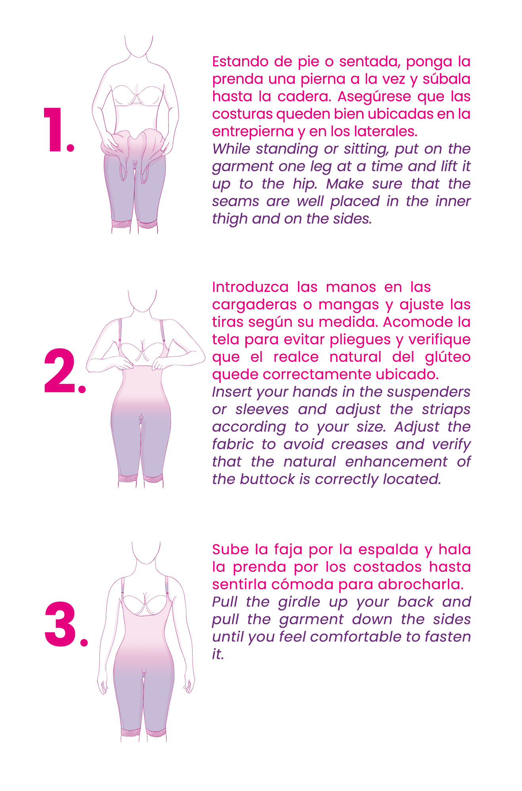
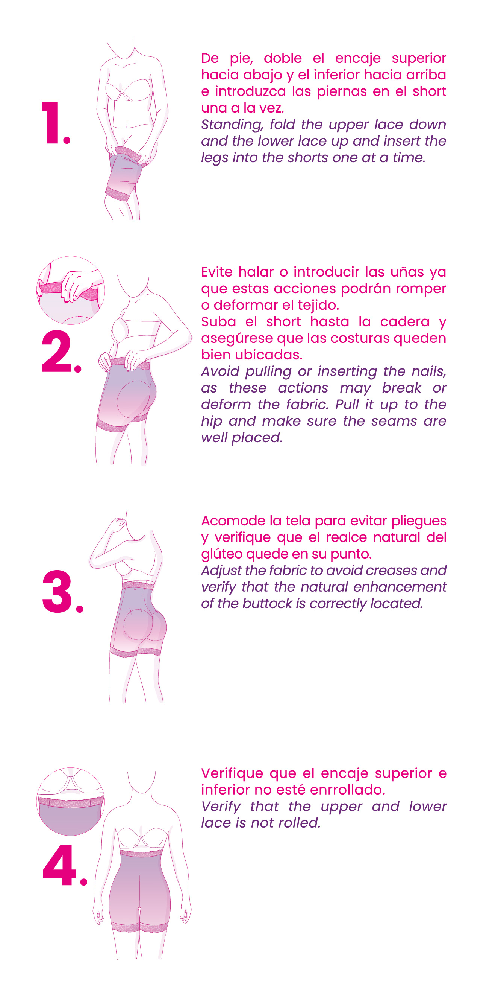
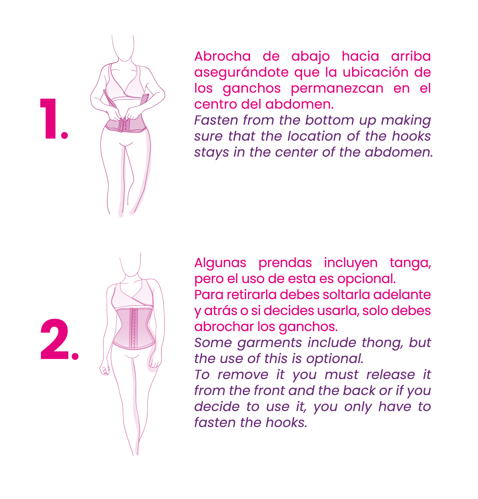
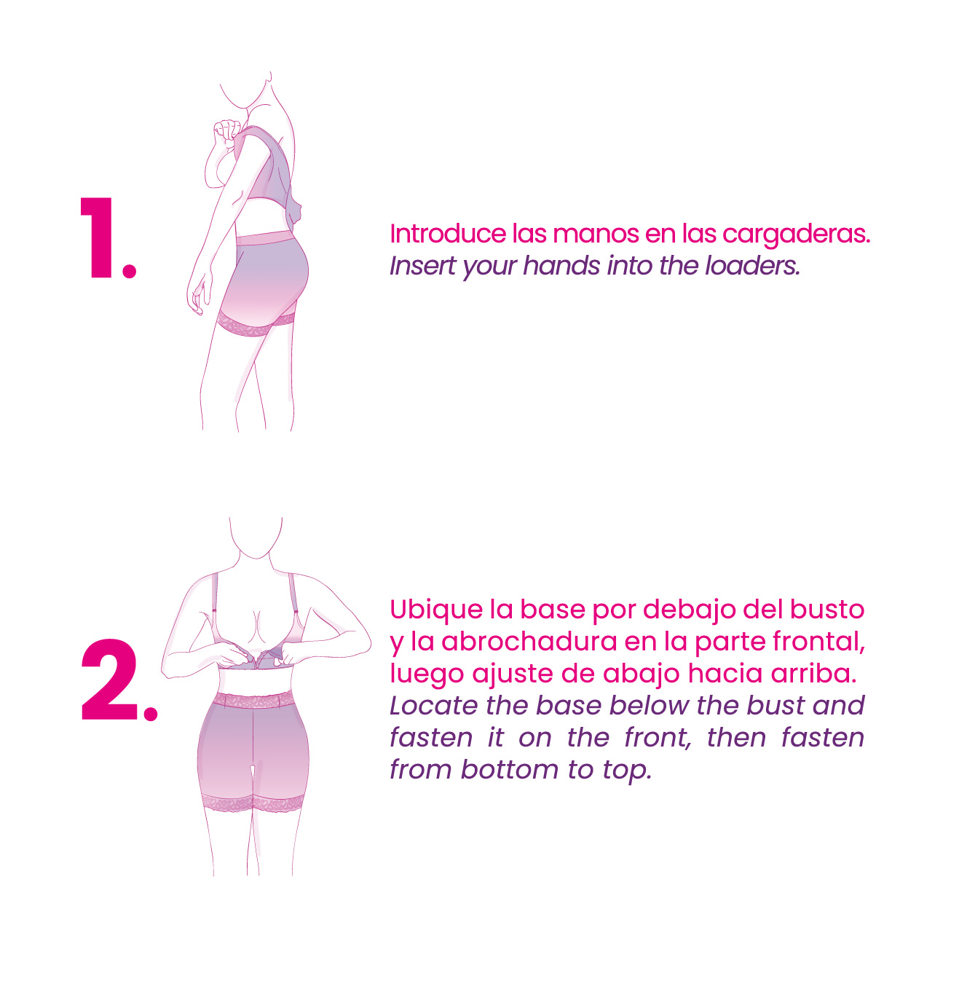
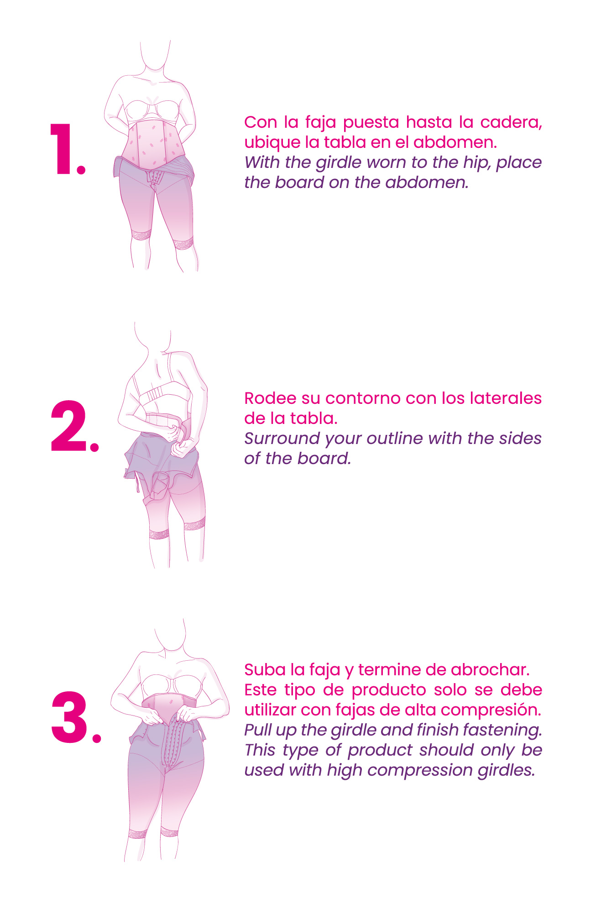
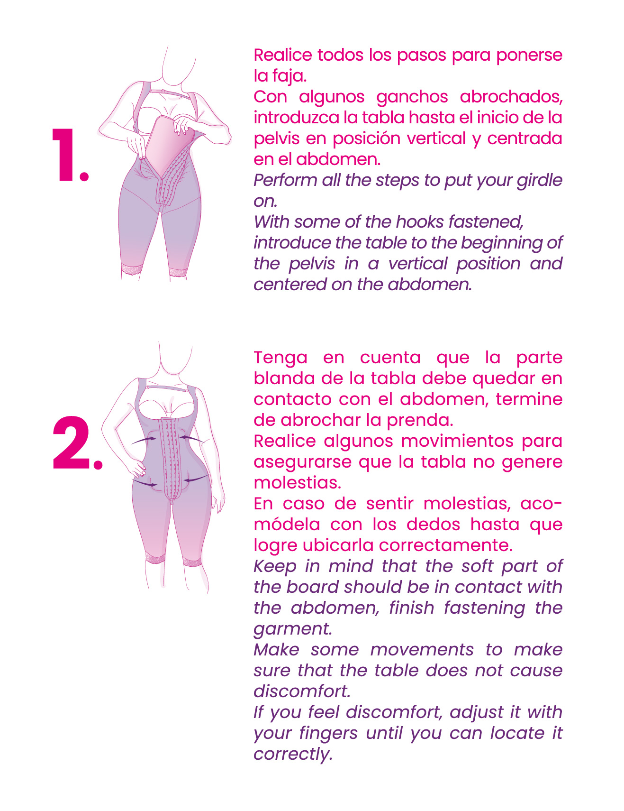
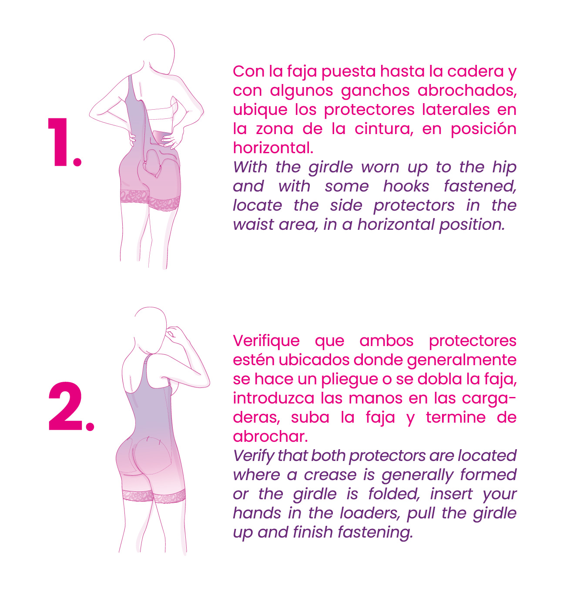
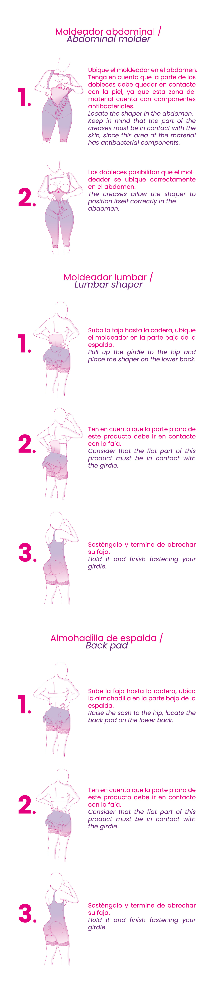
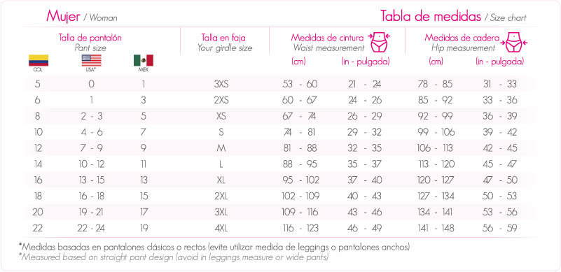
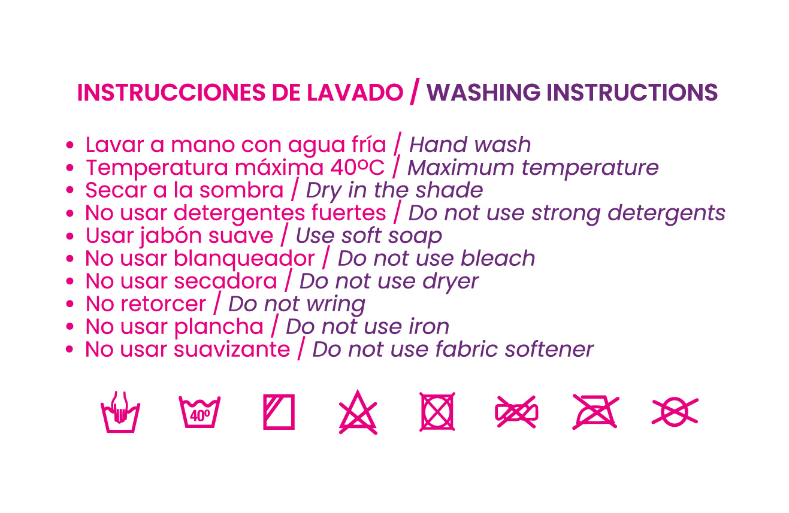

¿Cómo ponerte una Faja?
How to put a Shapewear?
¿Cómo ponerse una Faja?
¿How to put on a Faja?
En Fajas MyD tenemos una faja para cada momento y necesidad: Largas, cortas y extracortas; cada una de ellas diseñadas con el fin de resaltar tus curvas, moldear tu cuerpo cómodamente y optimizar tu proceso de recuperación posquirúrgico.
¿Cómo ponerte un Short?
¿How to wear a Short?
Si nunca has utilizado una prenda de control, nuestros shorts son perfectos para empezar. Con su uso podrás lucir tus glúteos con un aspecto muy natural, además te ayudará a controlar la zona y realzar tus caderas. Úsalo con tus jeans favoritos.
¿Cómo ponerte una Cinturilla?
¿How to put on a Waistband?
Nuestras cinturillas y chalecos son perfectos para definir tu abdomen, moldear tu cintura y lucir hermosa. Además su diseño contribuye a mantener una postura corporal correcta, brindan soporte y evitan molestias en la espalda.
¿Cómo ponerte un Brasier?
¿How to wear a Bra?
El cuidado en tu busto después de una cirugía plástica o un procedimiento quirúrgico es fundamental para obtener buenos resultados. Con nuestros brasier, obtienes sensación de alivio constante, contribuyes a una buena cicatrización y estás cómoda en cada momento.
Nuestra línea complementaria es ideal para optimizar los resultados después de tu cirugía plástica o procedimiento estético. Con nuestros productos complementarios podrás moldear y definir tu cuerpo, mientras le ayudas a recuperarse de manera más rápida y óptima.
Anatómicas.
Anatomical.

Abdominales.
Abdominal.

Protectores Laterales.
Side Protectors.

Moldeadores.
Shapers.

Mentonera.
Chin guard.
-curvas.jpg)
Tabla de medidas.
Size chart.

Instrucciones de Lavado.
Washing instructions.
Lava tu prenda con frecuencia de acuerdo a su uso, su lavado y cuidado garantizarán la duración de la prenda en el tiempo. Siempre ten cuidado con los ganchos, cremalleras y encajes en el momento de la limpieza. 